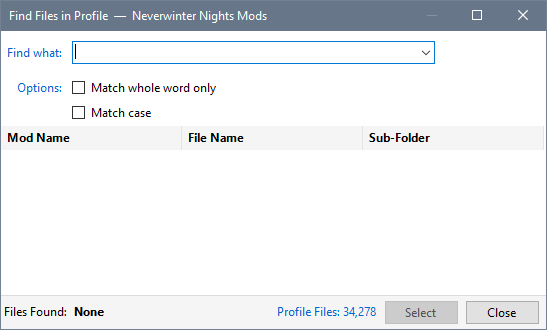
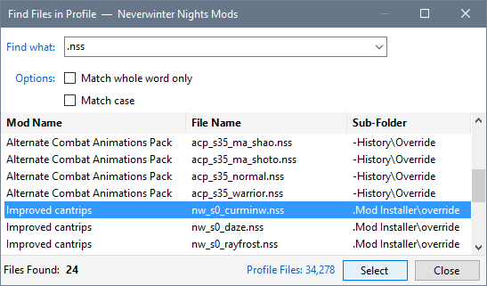
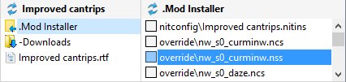
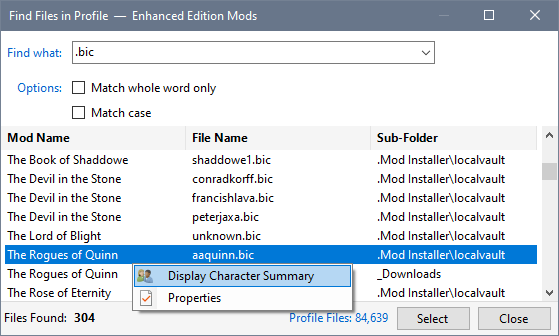

You can search for files in the active Profile using criteria to reduce the number of items shown in the list.



You can also display Property information and, if the correct type of file is selected, image or character summary information.

Find files in your Profile
Find files in Contents or Details